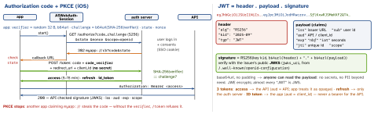

networking · folio
In one line: OAuth 2.0 (RFC 6749) is delegated authorization: the app gets a scoped access token without ever seeing the password. OIDC adds authentication: an ID token saying who logged in. A native app is a public client (no secret), so it uses authorization code + PKCE (RFC 7636) in the system browser (RFC 8252). A JWT (RFC 7519) is signed, not encrypted.
Download PDF Print view LaTeX source


How it works
- Roles: resource owner (user) · client (app) · authorization server (issues tokens) · resource server (API). Scopes cap what a token may ever do; the API still does per-user authZ.
- Implicit is dead: token in the redirect fragment — leaks via history/referrer/logs, no refresh, nothing to bind PKCE to. Security BCP (RFC 9700): implicit SHOULD NOT, password grant MUST NOT; the OAuth 2.1 draft omits both. Machine-to-machine: client credentials.
- Redirect:
ASWebAuthenticationSession(url:callbackURLScheme:)— the app never sees the password, shares Safari’s SSO cookies;prefersEphemeralWebBrowserSessionopts out. Claimedhttpsredirect (universal link) beats a custom scheme. Not aWKWebView: the app could read the password; Google refuses embedded views. - Refresh rotation: every refresh returns a new RT and kills the old; an old RT presented again = theft → the server revokes the whole family. Alternative: sender-constrained tokens (DPoP, RFC 9449).
- OIDC:
scope=openid; ID token claimsiss sub aud exp iat nonce auth_time;/userinfotakes the access token. Identity key =iss + sub, never email. Check thenonceyou sent — binds the token to this login (replay).
JWT validation — server side, every request
algin your allow-list (e.g. only RS256/ES256) — nevernone; never let the token’salgpick the key type (RS256→HS256 confusion signs with the public key).kid→ key from cached JWKS; unknownkid→ refetch once (rate-limited).- Verify the signature over the bytes as received.
issexact ·audcontains me ·exp> now - leeway,nbf≤ now + leeway (30–60 s skew) ·scope·jtiif one-time.
ID token from /token over TLS: OIDC lets the app skip the signature check(unverified), but still check iss aud exp nonce.
Example — single-flight refresh
actor TokenStore {
private var access: Token // in memory
private var refreshing: Task<Token, Error>?
func valid() async throws -> Token {
if let r = refreshing { return try await r.value } // join
guard access.expiresWithin(60) else { return access }
let r = Task { try await auth.refresh(keychain.refreshToken) }
refreshing = r // set BEFORE the await
defer { refreshing = nil }
access = try await r.value // new RT saved to Keychain
return access // 401 later? same path, forced
}
}Tokens at a glance
| for | life | on iOS | |
|---|---|---|---|
| access | API | 5–15 min | memory (+ Keychain) |
| refresh | auth server | days, rotated | Keychain only |
| ID | the app | minutes | read claims once, then drop |
Storing tokens on iOS
SecItemAdd with kSecClassGenericPassword. Accessibility: AfterFirstUnlockThisDeviceOnly if a background refresh must read it while locked; WhenUnlockedThisDeviceOnly otherwise. ThisDeviceOnly = no backup/migration to a new phone. Biometry (SecAccessControl .biometryCurrentSet) on the RT blocks silent refresh — a deliberate trade. Never UserDefaults. Keychain items survive uninstall (undocumented) → wipe on first launch after reinstall.
Logout and revocation — the JWT limit
A JWT is valid until exp: nothing un-signs it. Levers: short access TTL · revoke the RT (/revoke, RFC 7009) · deny-list by jti or a per-user token version (state again) · opaque tokens + introspection (RFC 7662). Logout = revoke RT + delete Keychain + end the browser session (end_session_endpoint) — or the next login is silent.
Traps
- Two requests hit 401, two refreshes run with rotation: the second uses a dead RT → reuse detection revokes the family → “random logouts”. Single-flight it.
- Sending the ID token to your API (wrong
aud) or reading authZ from it. - A client secret in the binary is public — extractable. PKCE replaces it.
expis NumericDate seconds, not ms; compare with a leeway.- OAuth alone is not login: an access token says what, not who.
- Sign in with Apple returns name/email only on the first authorization(unverified) — store them.